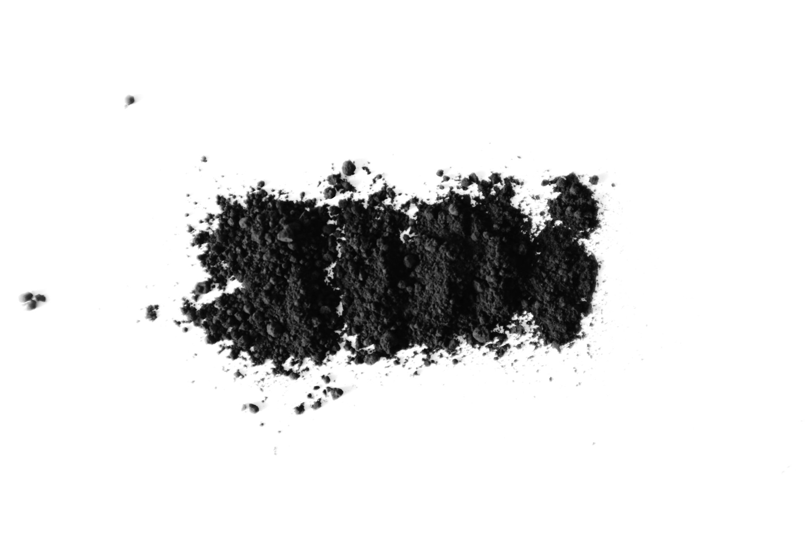
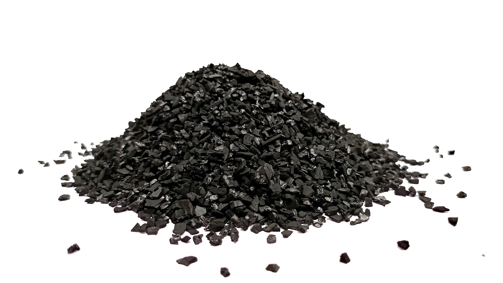
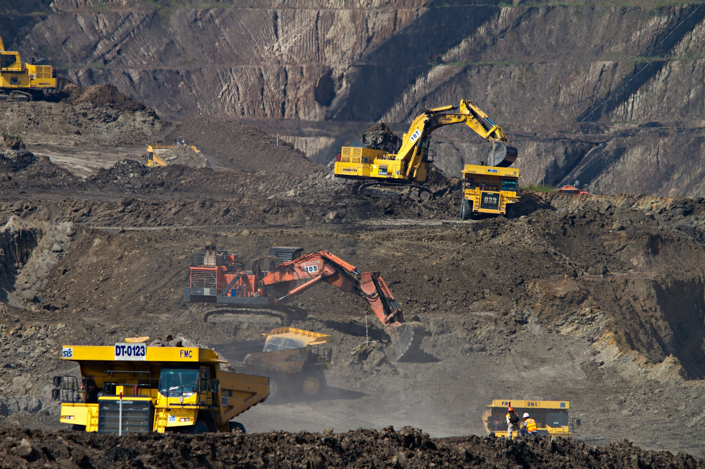

Powder
Extra fine
The finest milled grade, maximizing available surface per unit mass for fast uptake.
- Dosing into biological stages
- Suspension (stirred) treatment
- Flue and waste gas injection
The product
A porous carbon sorbent produced continuously from Rhenish lignite by RWE in Germany — established over decades as a cost-effective material for water and gas treatment.
Overview
HOK® takes its name from the rotary hearth furnace — the Herdofen — in which it is produced.
Most activated carbons begin life as purchased feedstock (coconut shell, hard coal, wood) that passes through separate carbonization and activation steps. HOK® is different: it is produced continuously from freshly mined Rhenish lignite at the source, in a single integrated process. The result is a sorbent with a consistent, repeatable character — and a cost position that has kept it competitive in industrial environmental duty for decades.

Powder
Fine grades for biological stages.

Granulate
Fixed beds & filters.

Raw material
Freshly mined Rhenish lignite, processed at the source.
How it's made
Production begins where the raw material is mined — no purchased feedstock, no intermediate handling between the seam and the furnace.
Freshly mined lignite from the Rhenish mining area is dried and prepared.
The Herdofen carbonizes and activates the material in one continuous step, developing its pore structure.
The activated product is milled or screened into four particle-size grades and packed for delivery.
Product grades
The same activated lignite, offered in particle-size grades that match how it will be applied — dosed as a powder, stirred in suspension, or packed as a bed.
Powder
Extra fine
The finest milled grade, maximizing available surface per unit mass for fast uptake.
Powder
Fine
A standard powder grade balancing kinetics with easier handling and dosing behavior.
Granulate
Fine granules
Small granules for compact beds where pressure drop and contact time must be balanced.
Granulate
1.25–5 mm
The coarse grade for full-scale fixed beds and filters with long service intervals.
[Exact particle-size distributions and grade designations per the current RWE datasheet — request the datasheet for the grade you intend to use.]
Technical data
Indicative values summarized from the manufacturer's published documentation. They describe the product family, not a specification for any single delivery.
| Property | Typical value | Notes |
|---|---|---|
| Raw material | Rhenish lignite | Mined and processed at the manufacturer's own site |
| Production route | Rotary hearth furnace | Continuous carbonization and activation in one step |
| BET surface area | approx. 300 m²/g | Large internal surface relative to cost |
| Particle-size range | Powder to 5 mm granules | Four grades; see product grades |
| Quality system | ISO 9001 | Certified management system at the production site |
| Quality control | Multiple samples daily | Analyzed in the manufacturer's laboratory |
Values above are indicative and rounded. For engineering or compliance use, request the current datasheet and safety data sheet through our contact page.
Packaging & supply
Packaging and logistics are arranged per order — from silo truck deliveries for high-volume dosing to palletized big bags for smaller or intermittent duty.
Application, expected consumption, and how your site can receive and store material.
Grade recommendation with the manufacturer's documentation, plus packaging and delivery options.
Scheduled deliveries with the consistency of an industrial-scale, quality-certified production source.
High volume
Pneumatic delivery into site silos for continuous dosing operations.
Standard
Palletized FIBC big bags for batch dosing, trials, and smaller installations.
Export
Containerized shipments for North American supply, scheduled around your consumption.
Next step
Tell us your application and we'll send the manufacturer's current datasheet and safety data sheet, with grade guidance for your duty.